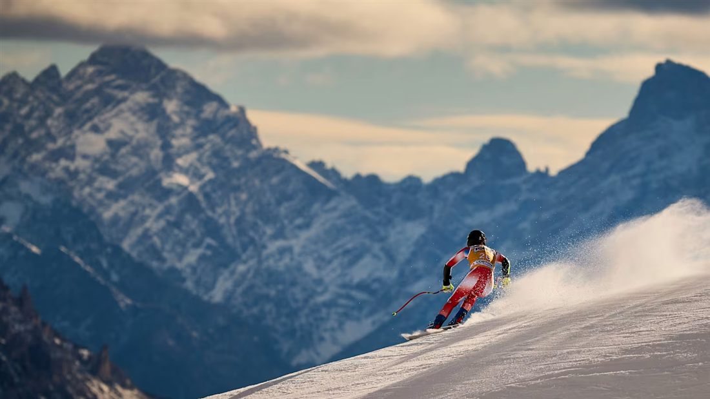
Ski alpinDescente · Super-G · Slalom géant
Piste Olympia delle Tofane
🚌 Navette officielle depuis le centre de Cortina. Téléphérique Freccia nel Cielo à 300 m.
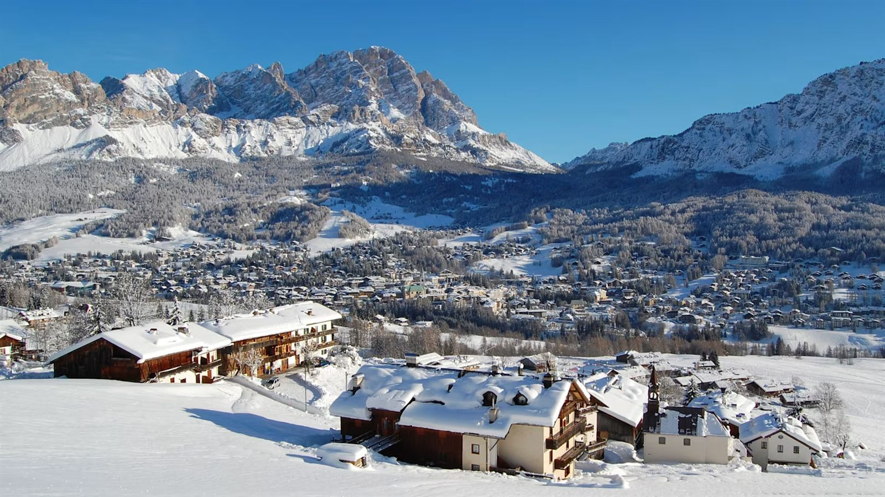
Des pistes légendaires au cœur des Dolomites, théâtre des plus grandes descentes de l'histoire du ski.
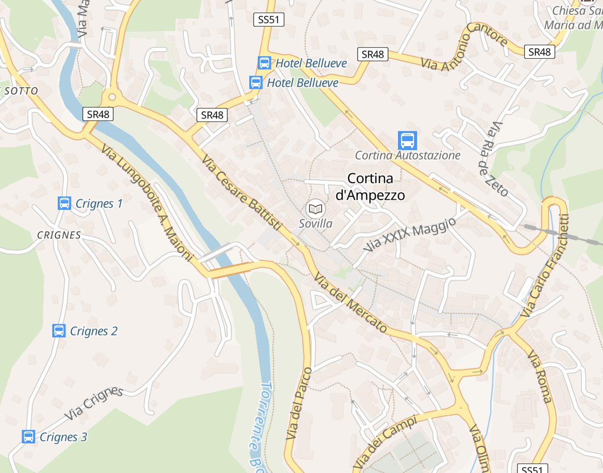

Ski alpinDescente · Super-G · Slalom géant
🚌 Navette officielle depuis le centre de Cortina. Téléphérique Freccia nel Cielo à 300 m.
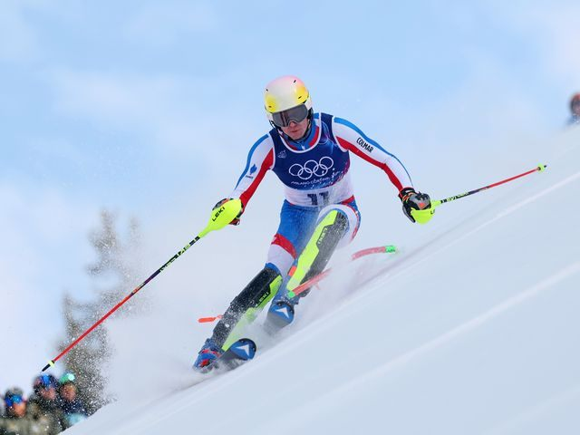
SlalomSlalom · Combiné alpin
🚌 Bus ligne A depuis Piazza Venezia. 10 min à pied depuis le centre-village.
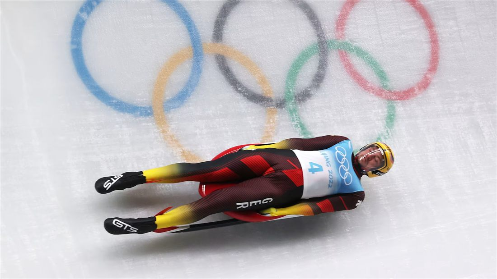
Bob · Luge · SkeletonBobsleigh · Luge · Skeleton
🚌 Navette depuis Cortina centre, arrêt Ronco. Piste historique inaugurée en 1923.
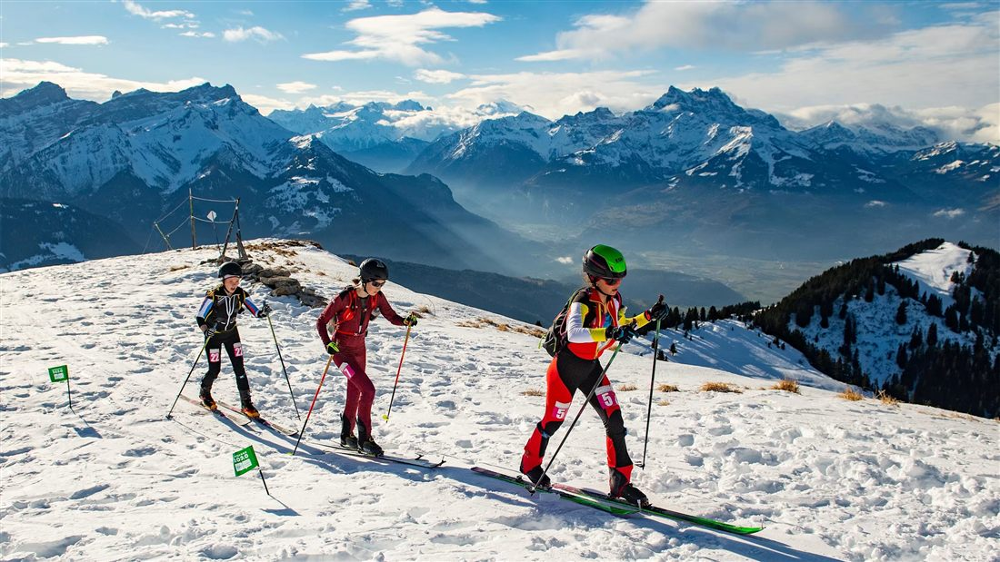
Ski alpinismeSki alpinisme — Sprint & Individuel
🚡 Téléphérique Faloria depuis le centre de Cortina. Départ toutes les 20 min.
-6°
Min moy.
3°
Max moy.
60 cm
Enneigement
6h
Soleil/jour
 Cortina
Cortina
Épreuve culturelle
Le belvédère des Dolomites — théâtre d'installations artistiques à ciel ouvert.
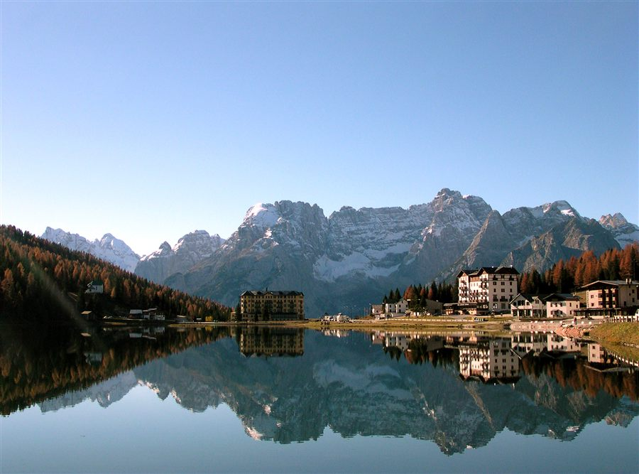
CortinaÉpreuve culturelle
La perle des Dolomites : miroir d'eau au pied du Sorapiss, concerts au crépuscule.
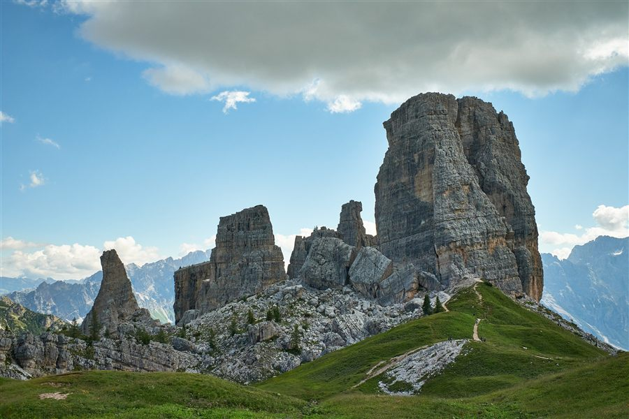
CortinaÉpreuve culturelle
Tours rocheuses mythiques et musée de plein air de la Grande Guerre.
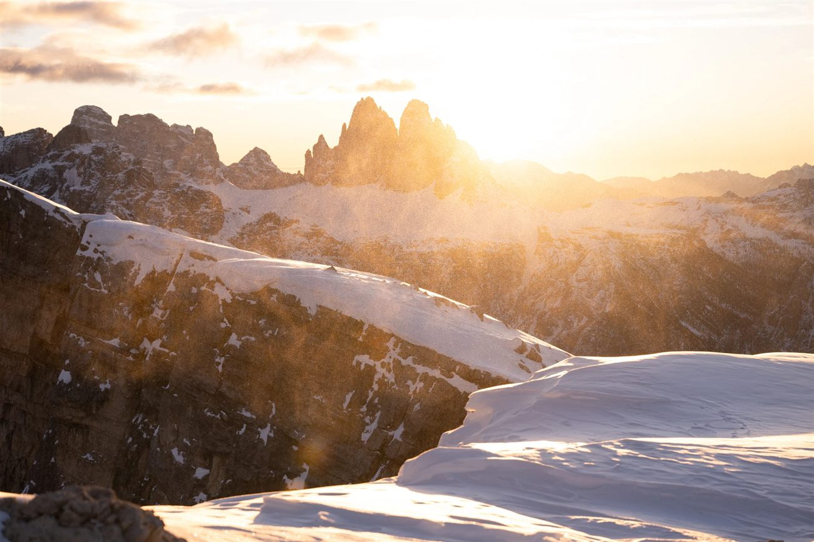
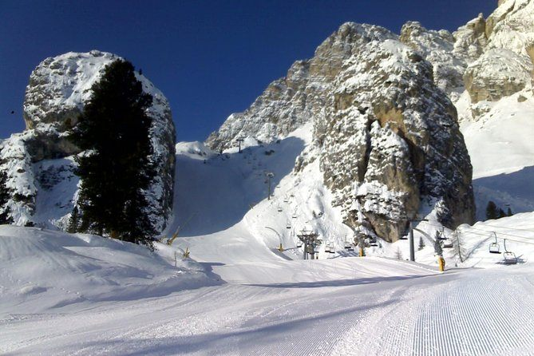
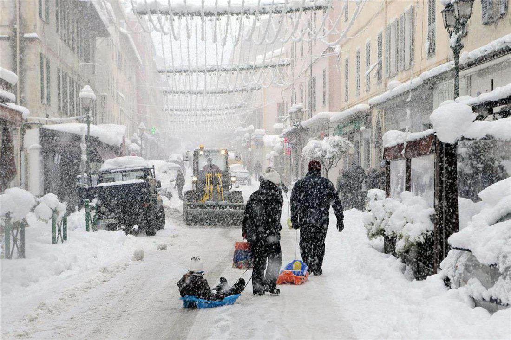
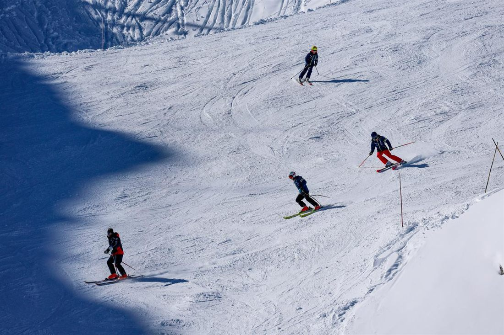
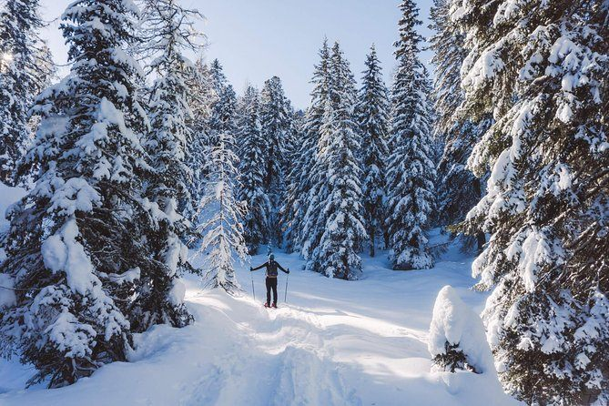